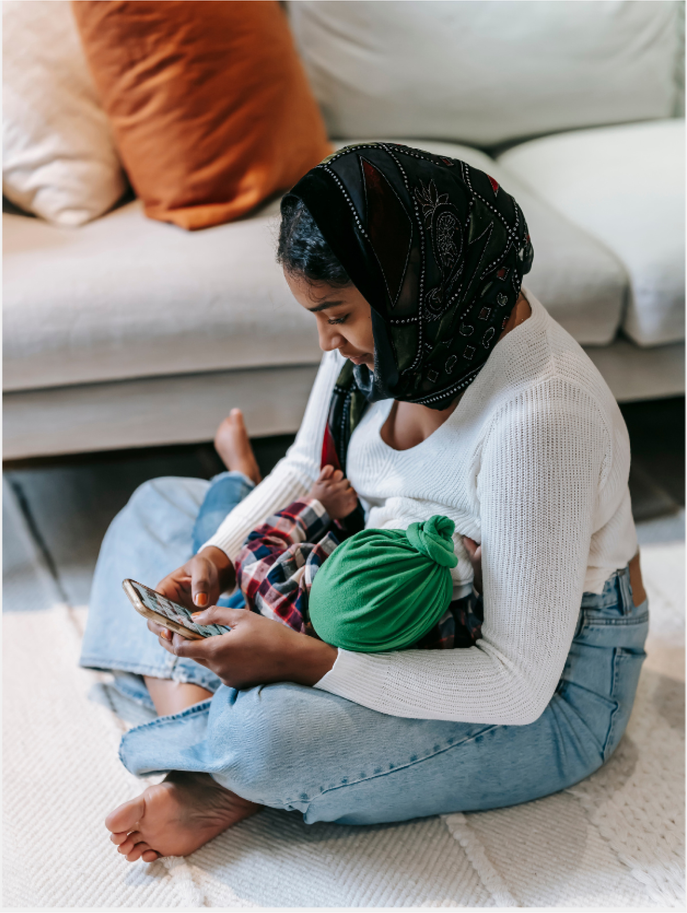

Creating a web site in Figma Workshopping and collaborating in Fig Jam Working Agile in Trello
1. About
Småtrollens föräldrakooperativ is a preeschool in the southern part of Gothenburgh. They started out in 1995 and their website is from early 2000s.
They felt that their web prescence needed an uppdate because the old site repelled potential families rather than attract them. As a parent cooperative they need a steady influx of new families to help with running the preschool.
The premise
The time limit on this project admitted no time for user research of any kind and we had to rely on heuristics and what we have learned about typography, colour theory and UI laws.
We had a initial meeting with the client and got a good sense of what they were after in terms of business needs, the required information as well as the feeling they wanted to convey on their new site.
The user story
“As a new parent looking for a preschool that is aligned with my values, I need to find the right preschool for my child on the internet so that I can contact them to find out more and to place my child.”
All good design starts with the user in mind. The User story above is derived from the information given by the preschool and what we used instead of a persona. But it gave us the following parameters to work from:
the user looks for information on line and expects to find everything they need to make a decision there.
the user is using their mobile as their primary device to browse the web (80% of all adults (16-85 years old) own and use their smartphone in the western parts of Sweden [SCB]).
he user is value driven and cares about the environment.

The design story
To capture the right feeling for the Småtrollen re-brand we put together all that we knew about them from:
the design brief
the clients themselves - how they presented the information
the personal tone of voice from the existing web site
competitors that they listed as their inspiration
Their business is a preschool from ages 1,5 to 6 years old with a high outdoor and nature focus. They grow vegetables, have rabbits, do excursions to the forest and the ocean and the toddlers have their naps outside in their prams.
They are also a parent cooperation which means that all the parents help out with the chores around the preschool. They clean a couple of times a year, they arrange special events and handle administration.
2. Design decisions
We workshopped key words to help us inform the colour palette, design decisions like: shapes, font, photo selection and the general design idea.
We decided on a warm palette with a tetradic colour scheme and adding a warm neutral to really emphasizing the nurturing and loving aspects of preschool caregivers
The colours went through both a greyscale check for contrast, since we have them next to each other in the design. We tested them for all the variations of colour perception variations and we ran them through a contrast checker.
Colours
UX writing and font
On point messages and a clear disposition makes it easier to read and absorb the information efficiently and effectively.
Keeping the personal tone of voice without loosing focus on the core content gives the user the best possible experience. The landing page is center aligned to be inviting. Everywhere else is left aligned for readability.
The text is accessible and tested for readability on the LIX index. The level of difficulty is the same as what you just read.
Headers and text: Source Sans 3
Logotype and slogan: Figma Hand
Design elements
The main idea for the site came from the concept of tabs in a school binder or flash cards stacked on top of each other. With this came the main idea that all UI elements were to be rounded and soft.
Our secondary colours carry from the flash cards on the front page to the top menu on the respective topic page. They are also found in graphic elements we created and the interaction design on design elements like buttons.
Icons
We used Bootstrap icons that we modified with rounded corners; the main design decision that we applied on everything.
Logotype
It started with the leaf icon from Bootstrap icons and changing the colour to something mor resembling a winter leaf colour. To create a balanced logotype we added leaves and gave them a summer and a fall look.
3. Work process
Research
A great way to start is with a card sorting workshop! We put down everything about the Småtrollen web site project we could think of and then we sorted our cards into piles with the same theme and we had a structure for our project.
In order to know what we had to compare our site with we did a competitor SWOT analysis.
Heuristic evaluation
As part of the project we did a heuristic evaluation of the existing web site and it is quite clear that these past 20 something years have seen a radical shift in what a website should look like. But for that generation home pages it's not all that bad. The main issues were found with the Aesthetic and minimalist design and the Consistency and standard rules.
The site no longer follows the standards of a professional preschool web site.
The design is by no means minimalist and the purpose of the site - to recruit more families gets lost in the massive amount of information to read through.
The average user doesn't want to read on line, they want to act. The existing page provides the opposite.
Workshopping in LO-FI
It's not super easy to come up with great ideas on demand but when five people come together and throw all their creativity on the table there is always something that pops out as a workable idea.
After having done our workshop we had lunch and that's when the creative flow really kicked in and our main idea with rounded corners, a warm neutral colour and the tabs - flash cards - page headers layout was borne.
Creativity is like a muscle. You have to do warm up exercises to get it flowing.
Design thinking
It just makes a lot of sense to understand the people you are designing for, define the task at hand, to let your imagination and creativity out to play, then to make a minimal viable product so that it can be tested before it goes any further. However, the most important part of the design thinking process, in my mind, is to iterate, iterate, iterate. No, really it is! The absolute death of good design thinking is when ideas or design choices become “precious” because you have invested too much time and resources in it.
The GIGANORMOUS take away from this project is to only create a Minimal Viable Product and to iterate it, like, all the time!
4. Prototype
Småtrollen's parent cooperation web site
No more reading.
Take a look around the web site for Småtrollen's preschool.
The video loop is 1.52 minutes long.
Or just have a look at these still screens showcasing the UI of the app.